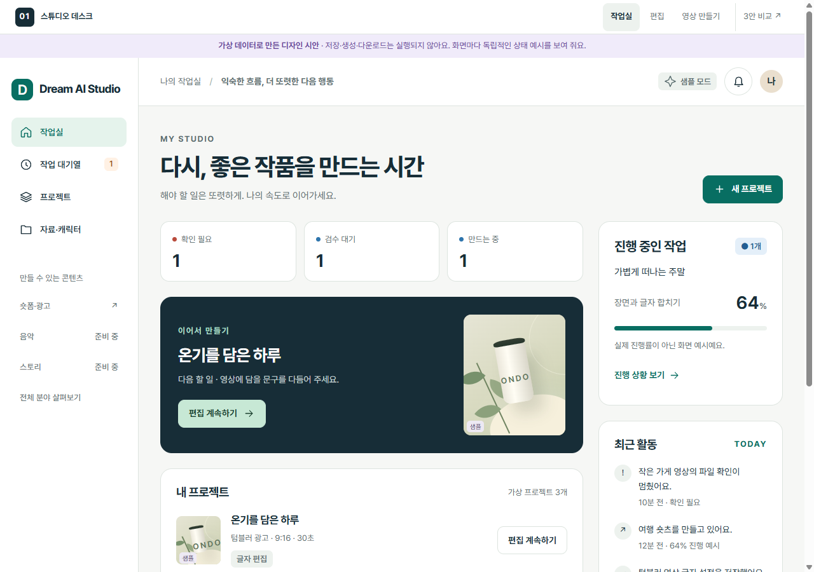
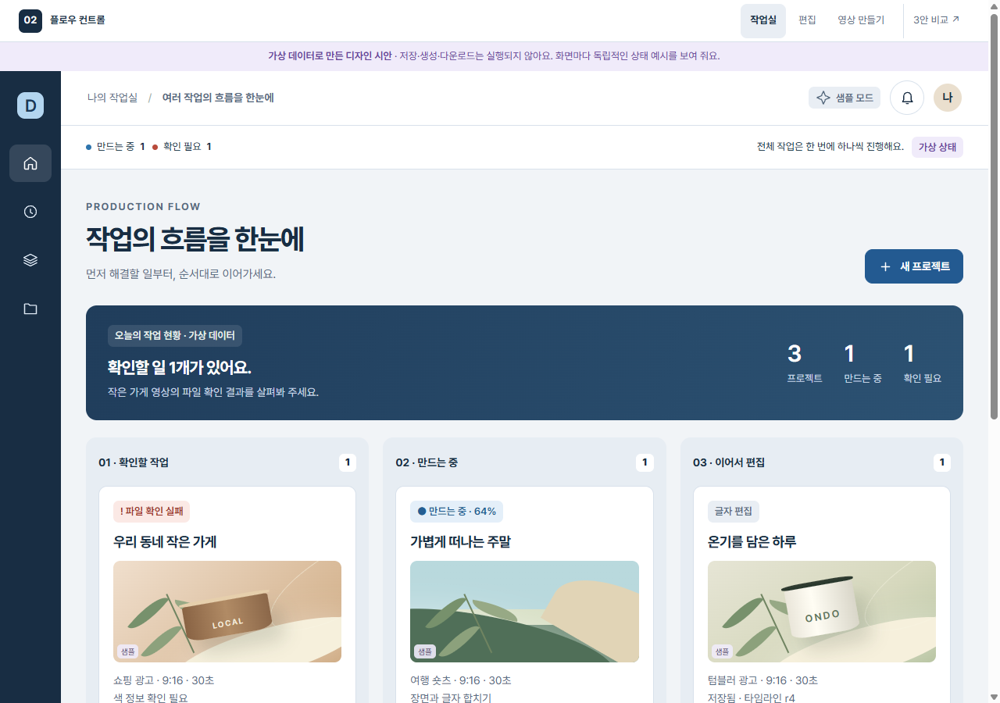
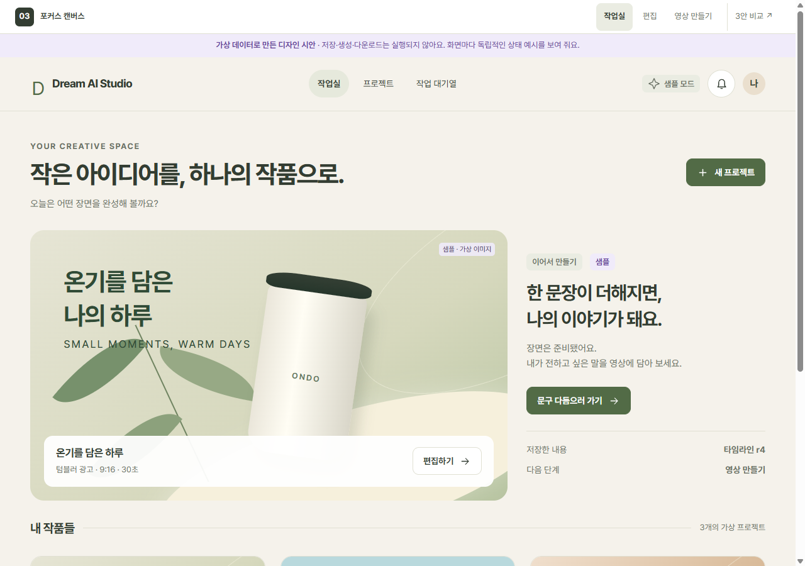
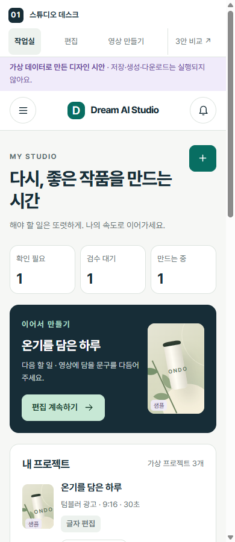
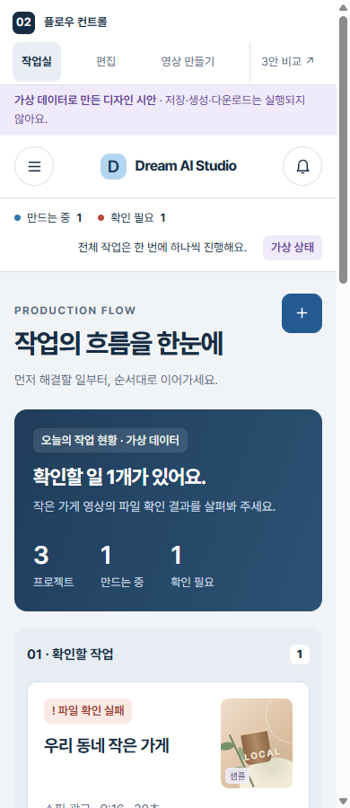
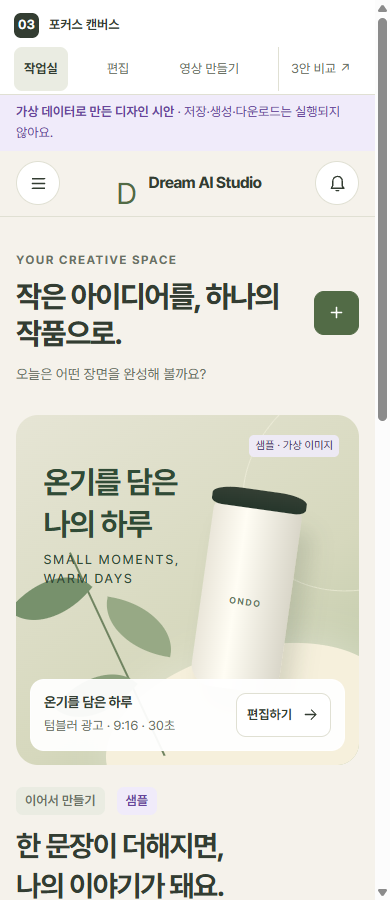

1280px 작업실 실제 캡처01추천 1순위
스튜디오 데스크
익숙한 자리에서 더 편하게.
다음 할 일과 진행 상황을 가지런히 정리했어요.
- 구조사이드바 + 작업 목록 + 상태 패널
- 편집미리보기 옆에서 글자를 다듬어요.
- 추천현재 앱의 흐름을 자연스럽게 개선하고 싶을 때
무엇을 먼저 보고, 어디서 이어갈까요?
현재 앱의 흐름을 바탕으로 새롭게 구성한 디자인 시안이에요.

1280px 작업실 실제 캡처익숙한 자리에서 더 편하게.
다음 할 일과 진행 상황을 가지런히 정리했어요.

1280px 작업실 실제 캡처작업의 흐름을 놓치지 않게.
막힌 곳과 다음 차례를 한눈에 살펴봐요.

1280px 작업실 실제 캡처관리 화면보다, 나의 작품을 먼저.
장면을 보며 다음 아이디어를 이어가요.



| 관점 | 01 스튜디오 데스크 | 02 플로우 컨트롤 | 03 포커스 캔버스 |
|---|---|---|---|
| 첫 화면 | 지금 이어서 할 일 | 확인이 필요한 작업과 진행 순서 | 만들고 있는 작품 |
| 좋은 점 | 기존 앱에서 익숙하게 이동해요. 상태와 행동이 균형 있게 보여요. | 여러 작업의 막힘을 빠르게 찾아요. 진행 상황을 살피기 좋아요. | 미리보기가 넓고 편안해요. 한 작품에 집중하기 좋아요. |
| 생각할 점 | 새로운 인상보다는 사용의 연속성을 우선해요. | 정보가 많아 첫 사용자에게 설명이 필요할 수 있어요. | 여러 작업을 비교하려면 화면을 더 내려야 해요. |
| 휴대폰 | 다음 행동 → 프로젝트 → 작업 상태 순서 | 확인할 작업 → 진행 작업 → 편집 순서 | 작품 미리보기 → 편집 → 작품 목록 순서 |
현재 기능을 빠뜨리지 않고 익숙하게 옮기기에는 1안이 가장 안정적이에요. 콘텐츠를 더 넓게 보고 싶다면 3안의 미리보기 비중을 다음 단계에서 검토할 수 있어요. 실제 적용 범위는 선택 후 별도로 정해요.
상태는 색과 글자로 함께 표시해요. 샘플은 샘플로 보이고, 실패를 완료로 표현하지 않아요. 휴대폰에서는 PC 편집의 제한을 안내해요. 자막 오차와 실제 휴대폰 재생은 확인 전으로 남겨 둬요.